symebcovmf_overlap_backfit
Annie Xie
2025-05-15
Last updated: 2026-03-04
Checks: 7 0
Knit directory:
symmetric_covariance_decomposition/
This reproducible R Markdown analysis was created with workflowr (version 1.7.2). The Checks tab describes the reproducibility checks that were applied when the results were created. The Past versions tab lists the development history.
Great! Since the R Markdown file has been committed to the Git repository, you know the exact version of the code that produced these results.
Great job! The global environment was empty. Objects defined in the global environment can affect the analysis in your R Markdown file in unknown ways. For reproduciblity it’s best to always run the code in an empty environment.
The command set.seed(20250408) was run prior to running
the code in the R Markdown file. Setting a seed ensures that any results
that rely on randomness, e.g. subsampling or permutations, are
reproducible.
Great job! Recording the operating system, R version, and package versions is critical for reproducibility.
Nice! There were no cached chunks for this analysis, so you can be confident that you successfully produced the results during this run.
Great job! Using relative paths to the files within your workflowr project makes it easier to run your code on other machines.
Great! You are using Git for version control. Tracking code development and connecting the code version to the results is critical for reproducibility.
The results in this page were generated with repository version d6aae5a. See the Past versions tab to see a history of the changes made to the R Markdown and HTML files.
Note that you need to be careful to ensure that all relevant files for
the analysis have been committed to Git prior to generating the results
(you can use wflow_publish or
wflow_git_commit). workflowr only checks the R Markdown
file, but you know if there are other scripts or data files that it
depends on. Below is the status of the Git repository when the results
were generated:
Ignored files:
Ignored: .DS_Store
Ignored: .Rhistory
Ignored: analysis/.DS_Store
Ignored: data/.DS_Store
Note that any generated files, e.g. HTML, png, CSS, etc., are not included in this status report because it is ok for generated content to have uncommitted changes.
These are the previous versions of the repository in which changes were
made to the R Markdown
(analysis/symebcovmf_overlap_backfit.Rmd) and HTML
(docs/symebcovmf_overlap_backfit.html) files. If you’ve
configured a remote Git repository (see ?wflow_git_remote),
click on the hyperlinks in the table below to view the files as they
were in that past version.
| File | Version | Author | Date | Message |
|---|---|---|---|---|
| Rmd | d6aae5a | Annie Xie | 2026-03-04 | Re-run analyses with new backfit function |
| html | b634902 | Annie Xie | 2025-06-05 | Build site. |
| Rmd | 1e1f127 | Annie Xie | 2025-06-05 | Add analysis of backfit in overlapping setting |
Introduction
In this example, we test out symEBcovMF with backfit on overlapping (but not necessarily hierarchical)-structured data.
Motivation
I am interested in testing whether backfitting helps symEBcovMF in
the overlapping setting (particularly in the setting where we set
Kmax to be the true number of factors). Our high level goal
is to develop a method that does well in both the tree setting and the
overlapping setting.
Packages and Functions
library(ebnm)
library(pheatmap)
library(ggplot2)Warning: package 'ggplot2' was built under R version 4.5.2library(lpSolve)
library(symebcovmf)source('code/visualization_functions.R')compute_crossprod_similarity <- function(est, truth){
K_est <- ncol(est)
K_truth <- ncol(truth)
n <- nrow(est)
#if estimates don't have same number of columns, try padding the estimate with zeros and make cosine similarity zero
if (K_est < K_truth){
est <- cbind(est, matrix(rep(0, n*(K_truth-K_est)), nrow = n))
}
if (K_est > K_truth){
truth <- cbind(truth, matrix(rep(0, n*(K_est - K_truth)), nrow = n))
}
#normalize est and truth
norms_est <- apply(est, 2, function(x){sqrt(sum(x^2))})
norms_est[norms_est == 0] <- Inf
norms_truth <- apply(truth, 2, function(x){sqrt(sum(x^2))})
norms_truth[norms_truth == 0] <- Inf
est_normalized <- t(t(est)/norms_est)
truth_normalized <- t(t(truth)/norms_truth)
#compute matrix of cosine similarities
cosine_sim_matrix <- abs(crossprod(est_normalized, truth_normalized))
assignment_problem <- lp.assign(t(cosine_sim_matrix), direction = "max")
return((1/K_truth)*assignment_problem$objval)
}permute_L <- function(est, truth){
K_est <- ncol(est)
K_truth <- ncol(truth)
n <- nrow(est)
#if estimates don't have same number of columns, try padding the estimate with zeros and make cosine similarity zero
if (K_est < K_truth){
est <- cbind(est, matrix(rep(0, n*(K_truth-K_est)), nrow = n))
}
if (K_est > K_truth){
truth <- cbind(truth, matrix(rep(0, n*(K_est - K_truth)), nrow = n))
}
#normalize est and truth
norms_est <- apply(est, 2, function(x){sqrt(sum(x^2))})
norms_est[norms_est == 0] <- Inf
norms_truth <- apply(truth, 2, function(x){sqrt(sum(x^2))})
norms_truth[norms_truth == 0] <- Inf
est_normalized <- t(t(est)/norms_est)
truth_normalized <- t(t(truth)/norms_truth)
#compute matrix of cosine similarities
cosine_sim_matrix <- abs(crossprod(est_normalized, truth_normalized))
assignment_problem <- lp.assign(t(cosine_sim_matrix), direction = "max")
perm <- apply(assignment_problem$solution, 1, which.max)
return(est[,perm])
}Data Generation
# args is a list containing n, p, k, indiv_sd, pi1, and seed
sim_binary_loadings_data <- function(args) {
set.seed(args$seed)
FF <- matrix(rnorm(args$k * args$p, sd = args$group_sd), ncol = args$k)
if (args$constrain_F) {
FF_svd <- svd(FF)
FF <- FF_svd$u
FF <- t(t(FF) * rep(args$group_sd, args$k) * sqrt(p))
}
LL <- matrix(rbinom(args$n*args$k, 1, args$pi1), nrow = args$n, ncol = args$k)
E <- matrix(rnorm(args$n * args$p, sd = args$indiv_sd), nrow = args$n)
Y <- LL %*% t(FF) + E
YYt <- (1/args$p)*tcrossprod(Y)
return(list(Y = Y, YYt = YYt, LL = LL, FF = FF, K = ncol(LL)))
}n <- 100
p <- 1000
k <- 10
pi1 <- 0.1
indiv_sd <- 1
group_sd <- 1
seed <- 1
sim_args = list(n = n, p = p, k = k, pi1 = pi1, indiv_sd = indiv_sd, group_sd = group_sd, seed = seed, constrain_F = FALSE)
sim_data <- sim_binary_loadings_data(sim_args)This is a heatmap of the scaled Gram matrix:
plot_heatmap(sim_data$YYt, colors_range = c('blue','gray96','red'), brks = seq(-max(abs(sim_data$YYt)), max(abs(sim_data$YYt)), length.out = 50))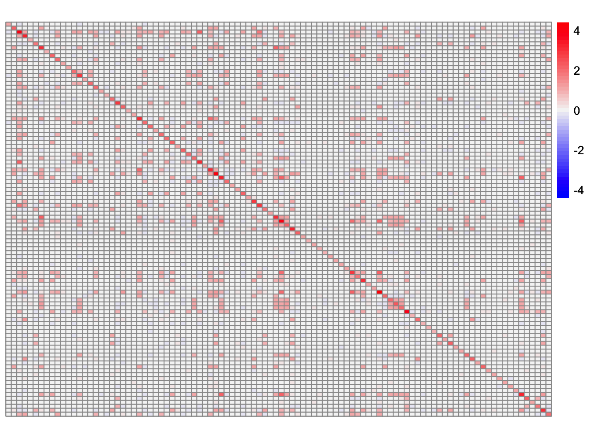
This is a scatter plot of the true loadings matrix:
pop_vec <- rep('A', n)
plot_loadings(sim_data$LL, pop_vec, legendYN = FALSE)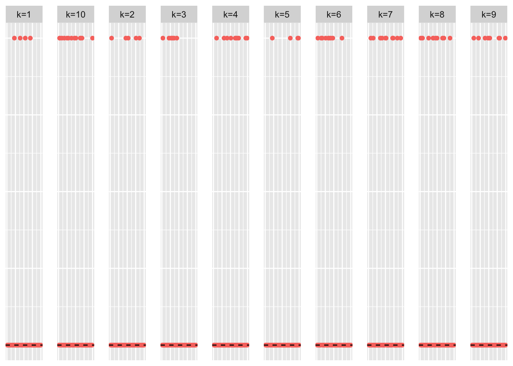
This is a heatmap of the true loadings matrix:
plot_heatmap(sim_data$LL)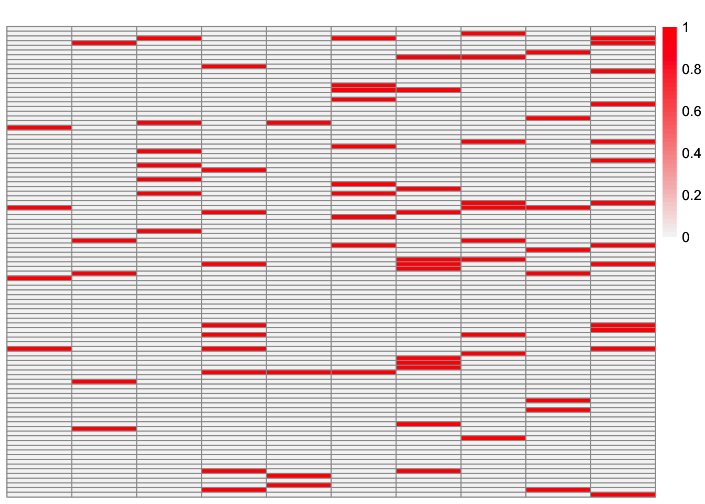
Regular symEBcovMF
symebcovmf_overlap_refit_fit <- sym_ebcovmf_fit(S = sim_data$YYt, ebnm_fn = ebnm::ebnm_point_exponential, K = 10, maxiter = 100, rank_one_tol = 10^(-8), tol = 10^(-8), refit_lam = TRUE)[1] "Adding factor 1"
[1] "Adding factor 2"
[1] "Adding factor 3"
[1] "Adding factor 4"
[1] "Adding factor 5"
[1] "Adding factor 6"
[1] "Adding factor 7"
[1] "Adding factor 8"
[1] "Adding factor 9"
[1] "Adding factor 10"This is a scatter plot of \(\hat{L}_{refit}\), the estimate from symEBcovMF:
plot_loadings(symebcovmf_overlap_refit_fit$L_pm %*% diag(sqrt(symebcovmf_overlap_refit_fit$lambda)), pop_vec, legendYN = FALSE)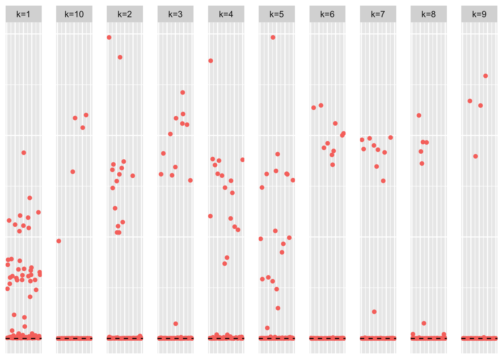
| Version | Author | Date |
|---|---|---|
| b634902 | Annie Xie | 2025-06-05 |
This is a heatmap of the true loadings matrix:
plot_heatmap(sim_data$LL)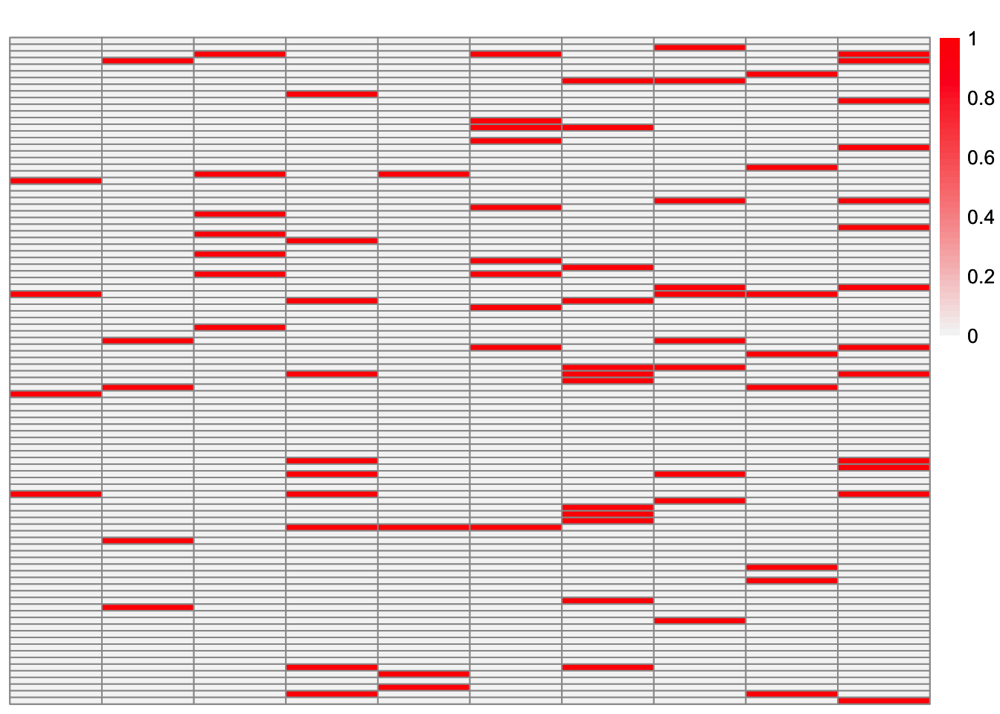
| Version | Author | Date |
|---|---|---|
| b634902 | Annie Xie | 2025-06-05 |
This is a heatmap of \(\hat{L}_{refit}\). The columns have been permuted to match the true loadings matrix:
symebcovmf_overlap_refit_fit_L_permuted <- permute_L(symebcovmf_overlap_refit_fit$L_pm, sim_data$LL)
plot_heatmap(symebcovmf_overlap_refit_fit_L_permuted, brks = seq(0, max(symebcovmf_overlap_refit_fit_L_permuted), length.out = 50))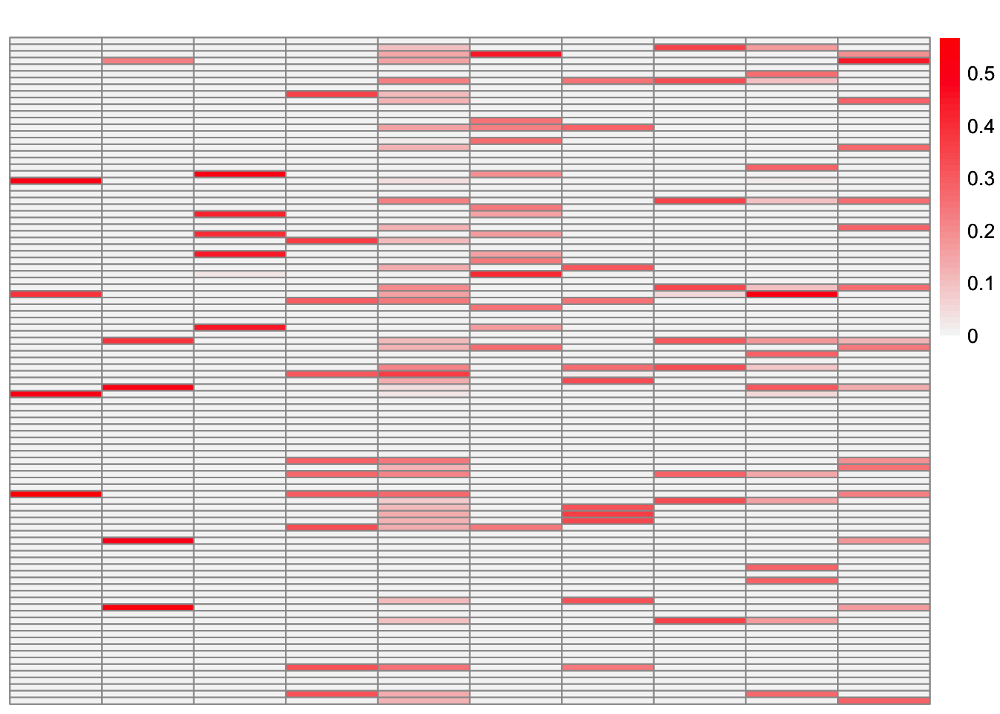
| Version | Author | Date |
|---|---|---|
| b634902 | Annie Xie | 2025-06-05 |
This is a heatmap of \(\hat{L}_{refit}\) where the columns have not been permuted. The order corresponds to the order in which the factors were added.
plot_heatmap(symebcovmf_overlap_refit_fit$L_pm %*% diag(sqrt(symebcovmf_overlap_refit_fit$lambda)), brks = seq(0, max(symebcovmf_overlap_refit_fit$L_pm %*% diag(sqrt(symebcovmf_overlap_refit_fit$lambda))), length.out = 50))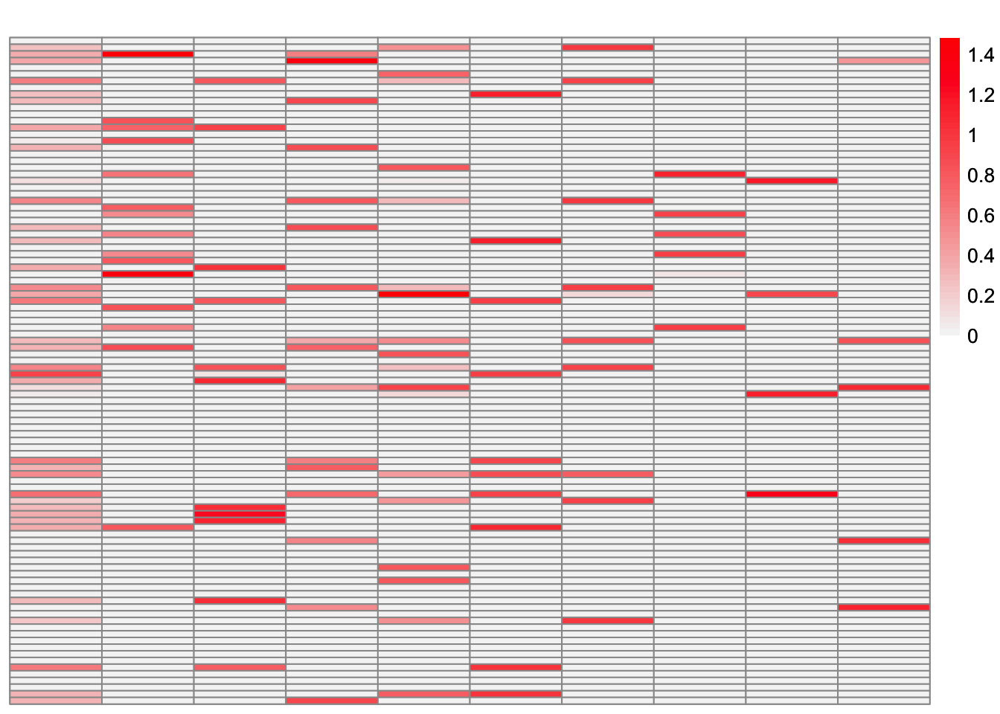
This is the objective function value attained:
symebcovmf_overlap_refit_fit$elbo[1] 1346.566This is the crossproduct similarity of \(\hat{L}_{refit}\):
compute_crossprod_similarity(symebcovmf_overlap_refit_fit$L_pm, sim_data$LL)[1] 0.8462461Observations
Greedy symEBcovMF does an okay job at recovering the overlapping structure. Some of estimates match the corresponding true factors very well, e.g. factors 1, 2, and 4. However, some estimates are more dense than their corresponding true factors, e.g. factors 5, 6, 9, and 10. There are also a couple of estimates which differ from their corresponding true factors by a couple of samples, e.g. factors 3, 7, and 8.
Looking at the heatmap where the columns are ordered by the order they were added, we see that the earlier factors are more dense, while the later factors are more sparse. The factors added later are the factors which more closely match their corresponding true factors.
For comparison, EBCD
For comparison, I try running greedy EBCD on the data.
library(ebcd)ebcd_init_obj <- ebcd_init(X = t(sim_data$Y))
greedy_ebcd_fit <- ebcd_greedy(ebcd_init_obj, Kmax = 10, ebnm_fn = ebnm::ebnm_point_exponential)This is a heatmap of the estimate from greedy EBCD, \(\hat{L}_{ebcd-greedy}\):
plot_heatmap(greedy_ebcd_fit$EL, brks = seq(0, max(greedy_ebcd_fit$EL), length.out = 50))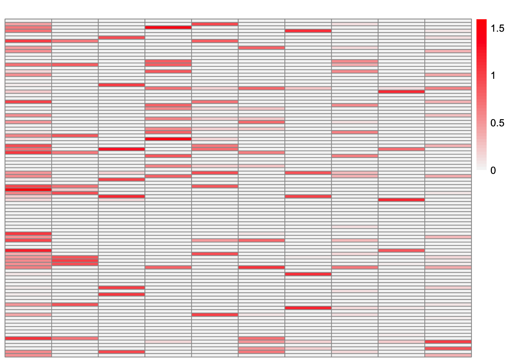
This is the crossproduct similarity of \(\hat{L}_{ebcd-greedy}\):
compute_crossprod_similarity(greedy_ebcd_fit$EL, sim_data$LL)[1] 0.852768Now, we run EBCD’s backfit method.
ebcd_backfit_fit <- ebcd_backfit(greedy_ebcd_fit)This is a heatmap of the estimate from EBCD with backfit, \(\hat{L}_{ebcd-backfit}\):
plot_heatmap(ebcd_backfit_fit$EL, brks = seq(0, max(ebcd_backfit_fit$EL), length.out = 50))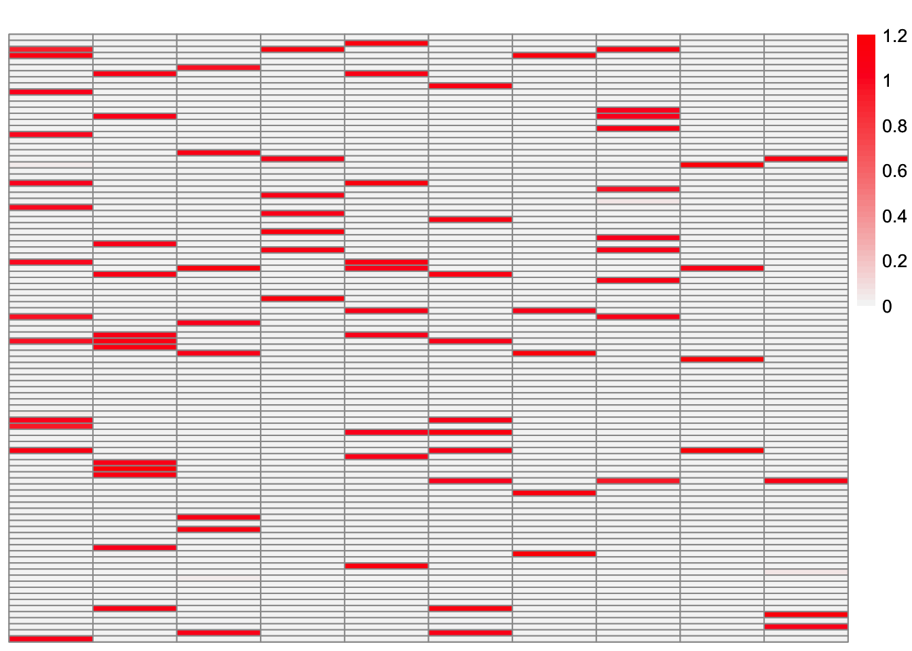
This is a heatmap of the true loadings matrix:
plot_heatmap(sim_data$LL)
| Version | Author | Date |
|---|---|---|
| b634902 | Annie Xie | 2025-06-05 |
This is a heatmap of \(\hat{L}_{ebcd-backfit}\). The columns have been permuted to best match the true loadings matrix.
ebcd_backfit_fit_L_permuted <- permute_L(ebcd_backfit_fit$EL, sim_data$LL)
plot_heatmap(ebcd_backfit_fit_L_permuted, brks = seq(0, max(ebcd_backfit_fit_L_permuted), length.out = 50))
This is the crossproduct similarity of \(\hat{L}_{ebcd-backfit}\):
compute_crossprod_similarity(ebcd_backfit_fit$EL, sim_data$LL)[1] 0.9990405We see that the greedy EBCD method performs comparably to greedy symEBcovMF. Therefore, part of the reason EBCD performs so well in this setting is its backfitting. So I suspect that backfitting will help us obtain a better estimate.
symEBcovMF with Backfit
Now, we try backfitting (also with a point-exponential prior):
symebcovmf_fit_backfit <- sym_ebcovmf_backfit(sim_data$YYt, symebcovmf_overlap_refit_fit, ebnm_fn = ebnm::ebnm_point_exponential, backfit_maxiter = 100)[1] "Updating factor 1"
[1] "Updating factor 2"
[1] "Updating factor 3"
[1] "elbo decreased by 1.12332156982643"
[1] "Updating factor 4"
[1] "Updating factor 5"
[1] "Updating factor 6"
[1] "elbo decreased by 0.796081267925729"
[1] "Updating factor 7"
[1] "elbo decreased by 9.32781378584741"
[1] "Updating factor 8"
[1] "elbo decreased by 13.9068565516968"
[1] "Updating factor 9"
[1] "Updating factor 10"
[1] "Updating factor 1"
[1] "Updating factor 2"
[1] "Updating factor 3"
[1] "elbo decreased by 3.75993650050668"
[1] "Updating factor 4"
[1] "elbo decreased by 0.818292462200134"
[1] "Updating factor 5"
[1] "Updating factor 6"
[1] "elbo decreased by 0.67809015559942"
[1] "Updating factor 7"
[1] "Updating factor 8"
[1] "elbo decreased by 4.80516805477919"
[1] "Updating factor 9"
[1] "Updating factor 10"
[1] "Updating factor 1"
[1] "Updating factor 2"
[1] "Updating factor 3"
[1] "elbo decreased by 1.56093211525331"
[1] "Updating factor 4"
[1] "elbo decreased by 0.410071898601927"
[1] "Updating factor 5"
[1] "Updating factor 6"
[1] "elbo decreased by 0.356048599324367"
[1] "Updating factor 7"
[1] "Updating factor 8"
[1] "elbo decreased by 1.45359766926003"
[1] "Updating factor 9"
[1] "Updating factor 10"
[1] "Updating factor 1"
[1] "Updating factor 2"
[1] "Updating factor 3"
[1] "elbo decreased by 0.746456244760338"
[1] "Updating factor 4"
[1] "elbo decreased by 0.0649641145778332"
[1] "Updating factor 5"
[1] "Updating factor 6"
[1] "elbo decreased by 0.378696646000662"
[1] "Updating factor 7"
[1] "Updating factor 8"
[1] "elbo decreased by 0.20893780647657"
[1] "update to factor 8 decreased the elbo by 0.165800175851018"
[1] "Updating factor 9"
[1] "elbo decreased by 0.00114965391776423"
[1] "Updating factor 10"
[1] "Updating factor 1"
[1] "Updating factor 2"
[1] "elbo decreased by 0.00896701430428948"
[1] "Updating factor 3"
[1] "elbo decreased by 0.310081415617333"
[1] "Updating factor 4"
[1] "elbo decreased by 0.00398626043624972"
[1] "Updating factor 5"
[1] "Updating factor 6"
[1] "elbo decreased by 0.227184265406777"
[1] "Updating factor 7"
[1] "Updating factor 8"
[1] "elbo decreased by 0.210829787967214"
[1] "update to factor 8 decreased the elbo by 0.148621639873454"
[1] "Updating factor 9"
[1] "elbo decreased by 0.0241422231651995"
[1] "Updating factor 10"
[1] "Updating factor 1"
[1] "Updating factor 2"
[1] "Updating factor 3"
[1] "elbo decreased by 0.118496522247369"
[1] "Updating factor 4"
[1] "elbo decreased by 0.142367092706081"
[1] "Updating factor 5"
[1] "elbo decreased by 0.000939298980938474"
[1] "Updating factor 6"
[1] "elbo decreased by 0.0562601084175185"
[1] "update to factor 6 decreased the elbo by 0.0722112447824657"
[1] "Updating factor 7"
[1] "Updating factor 8"
[1] "elbo decreased by 0.21744184333329"
[1] "update to factor 8 decreased the elbo by 0.182120107279843"
[1] "Updating factor 9"
[1] "elbo decreased by 0.0142233305286936"
[1] "update to factor 9 decreased the elbo by 0.00104456337612646"
[1] "Updating factor 10"
[1] "Updating factor 1"
[1] "Updating factor 2"
[1] "Updating factor 3"
[1] "elbo decreased by 0.0606010236438124"
[1] "Updating factor 4"
[1] "elbo decreased by 0.0650339052699564"
[1] "Updating factor 5"
[1] "elbo decreased by 0.000809068558737636"
[1] "update to factor 5 decreased the elbo by 4.54765140602831e-05"
[1] "Updating factor 6"
[1] "elbo decreased by 0.0497807891465527"
[1] "update to factor 6 decreased the elbo by 0.0274403531248026"
[1] "Updating factor 7"
[1] "Updating factor 8"
[1] "elbo decreased by 0.219283865631951"
[1] "update to factor 8 decreased the elbo by 0.184270597460909"
[1] "Updating factor 9"
[1] "elbo decreased by 0.0251582267278536"
[1] "Updating factor 10"
[1] "Updating factor 1"
[1] "Updating factor 2"
[1] "Updating factor 3"
[1] "elbo decreased by 0.0334995206694657"
[1] "Updating factor 4"
[1] "elbo decreased by 0.0483717001452533"
[1] "Updating factor 5"
[1] "update to factor 5 decreased the elbo by 0.000882353154793236"
[1] "Updating factor 6"
[1] "elbo decreased by 0.0394280052032627"
[1] "Updating factor 7"
[1] "Updating factor 8"
[1] "elbo decreased by 0.216991161586066"
[1] "update to factor 8 decreased the elbo by 0.187859073093477"
[1] "Updating factor 9"
[1] "elbo decreased by 0.0106456974917819"
[1] "update to factor 9 decreased the elbo by 0.00919669831273495"
[1] "Updating factor 10"
[1] "Updating factor 1"
[1] "Updating factor 2"
[1] "Updating factor 3"
[1] "elbo decreased by 0.0061658802042075"
[1] "update to factor 3 decreased the elbo by 0.0114476921794449"
[1] "Updating factor 4"
[1] "elbo decreased by 0.051816588307247"
[1] "Updating factor 5"
[1] "elbo decreased by 0.00039018192956064"
[1] "update to factor 5 decreased the elbo by 0.000466345219592768"
[1] "Updating factor 6"
[1] "elbo decreased by 0.00828961760316815"
[1] "Updating factor 7"
[1] "Updating factor 8"
[1] "elbo decreased by 0.215409113528949"
[1] "update to factor 8 decreased the elbo by 0.203282230328568"
[1] "Updating factor 9"
[1] "elbo decreased by 0.0179267009020805"
[1] "Updating factor 10"
[1] "elbo decreased by 0.000317622746024426"
[1] "Updating factor 1"
[1] "Updating factor 2"
[1] "Updating factor 3"
[1] "elbo decreased by 0.00770186139379803"
[1] "Updating factor 4"
[1] "elbo decreased by 0.0824622732088756"
[1] "Updating factor 5"
[1] "update to factor 5 decreased the elbo by 0.000708552181549749"
[1] "Updating factor 6"
[1] "Updating factor 7"
[1] "elbo decreased by 1.04351852314721e-05"
[1] "Updating factor 8"
[1] "elbo decreased by 0.209239627803072"
[1] "update to factor 8 decreased the elbo by 0.233849740385267"
[1] "Updating factor 9"
[1] "elbo decreased by 0.0118820359034544"
[1] "Updating factor 10"
[1] "elbo decreased by 0.000539441859018552"
[1] "Updating factor 1"
[1] "Updating factor 2"
[1] "Updating factor 3"
[1] "elbo decreased by 0.00804604001223197"
[1] "Updating factor 4"
[1] "elbo decreased by 0.148429007018422"
[1] "Updating factor 5"
[1] "update to factor 5 decreased the elbo by 0.000632321901775867"
[1] "Updating factor 6"
[1] "Updating factor 7"
[1] "Updating factor 8"
[1] "elbo decreased by 0.189084229475156"
[1] "update to factor 8 decreased the elbo by 0.334440631258531"
[1] "Updating factor 9"
[1] "elbo decreased by 0.0117053868639232"
[1] "Updating factor 10"
[1] "update to factor 10 decreased the elbo by 0.000524059203598881"
[1] "Updating factor 1"
[1] "Updating factor 2"
[1] "Updating factor 3"
[1] "elbo decreased by 0.00862041765412869"
[1] "Updating factor 4"
[1] "elbo decreased by 0.198174531221412"
[1] "Updating factor 5"
[1] "update to factor 5 decreased the elbo by 0.00053568264866044"
[1] "Updating factor 6"
[1] "Updating factor 7"
[1] "Updating factor 8"
[1] "elbo decreased by 0.159484222152059"
[1] "update to factor 8 decreased the elbo by 0.42607295641028"
[1] "Updating factor 9"
[1] "elbo decreased by 0.0118569183359796"
[1] "Updating factor 10"
[1] "update to factor 10 decreased the elbo by 0.000467768350063125"
[1] "Updating factor 1"
[1] "Updating factor 2"
[1] "Updating factor 3"
[1] "elbo decreased by 0.00757509417371693"
[1] "Updating factor 4"
[1] "elbo decreased by 0.0997515379344804"
[1] "Updating factor 5"
[1] "update to factor 5 decreased the elbo by 0.000398381145714666"
[1] "Updating factor 6"
[1] "Updating factor 7"
[1] "Updating factor 8"
[1] "elbo decreased by 0.160488369437189"
[1] "update to factor 8 decreased the elbo by 0.322015365134121"
[1] "Updating factor 9"
[1] "elbo decreased by 0.0109474131186289"
[1] "Updating factor 10"
[1] "update to factor 10 decreased the elbo by 0.000355316673449124"
[1] "Updating factor 1"
[1] "Updating factor 2"
[1] "Updating factor 3"
[1] "elbo decreased by 0.00512112692513256"
[1] "Updating factor 4"
[1] "elbo decreased by 0.0646815689660798"
[1] "Updating factor 5"
[1] "update to factor 5 decreased the elbo by 0.000265025447788503"
[1] "Updating factor 6"
[1] "elbo decreased by 0.000692937557232653"
[1] "Updating factor 7"
[1] "Updating factor 8"
[1] "elbo decreased by 0.162825165148661"
[1] "update to factor 8 decreased the elbo by 0.279550169004779"
[1] "Updating factor 9"
[1] "elbo decreased by 0.00935910463522305"
[1] "Updating factor 10"
[1] "elbo decreased by 0.000770295129314036"
[1] "Updating factor 1"
[1] "Updating factor 2"
[1] "Updating factor 3"
[1] "elbo decreased by 0.00354722967904308"
[1] "Updating factor 4"
[1] "elbo decreased by 0.0598152922989357"
[1] "Updating factor 5"
[1] "update to factor 5 decreased the elbo by 0.000142874974699225"
[1] "Updating factor 6"
[1] "elbo decreased by 0.000666241488033847"
[1] "Updating factor 7"
[1] "Updating factor 8"
[1] "elbo decreased by 0.164074409516161"
[1] "update to factor 8 decreased the elbo by 0.269041422340251"
[1] "Updating factor 9"
[1] "elbo decreased by 0.00815636951483611"
[1] "Updating factor 10"
[1] "elbo decreased by 0.00112885426597131"
[1] "Updating factor 1"
[1] "Updating factor 2"
[1] "elbo decreased by 0.0031233023587447"
[1] "Updating factor 3"
[1] "elbo decreased by 0.00256264681183893"
[1] "Updating factor 4"
[1] "elbo decreased by 0.0604183130467391"
[1] "Updating factor 5"
[1] "update to factor 5 decreased the elbo by 2.69956990450737e-05"
[1] "Updating factor 6"
[1] "Updating factor 7"
[1] "Updating factor 8"
[1] "elbo decreased by 0.165202213891007"
[1] "update to factor 8 decreased the elbo by 0.265389397839044"
[1] "Updating factor 9"
[1] "elbo decreased by 0.00761150011703648"
[1] "Updating factor 10"
[1] "elbo decreased by 0.00109275079103099"
[1] "Updating factor 1"
[1] "Updating factor 2"
[1] "elbo decreased by 0.0040294132395502"
[1] "Updating factor 3"
[1] "elbo decreased by 0.00190796050219433"
[1] "Updating factor 4"
[1] "elbo decreased by 0.0619044787840721"
[1] "Updating factor 5"
[1] "Updating factor 6"
[1] "Updating factor 7"
[1] "Updating factor 8"
[1] "elbo decreased by 0.166265022494372"
[1] "update to factor 8 decreased the elbo by 0.262770105465279"
[1] "Updating factor 9"
[1] "elbo decreased by 0.00644205545859222"
[1] "Updating factor 10"
[1] "elbo decreased by 0.00109497803032355"
[1] "Updating factor 1"
[1] "Updating factor 2"
[1] "elbo decreased by 0.00445942837814073"
[1] "Updating factor 3"
[1] "elbo decreased by 0.0017034926913766"
[1] "Updating factor 4"
[1] "elbo decreased by 0.0637688255123976"
[1] "Updating factor 5"
[1] "Updating factor 6"
[1] "Updating factor 7"
[1] "elbo decreased by 1.49948891703389e-06"
[1] "Updating factor 8"
[1] "elbo decreased by 0.167369540943128"
[1] "update to factor 8 decreased the elbo by 0.260462867398019"
[1] "Updating factor 9"
[1] "elbo decreased by 0.00719417042864734"
[1] "Updating factor 10"
[1] "elbo decreased by 0.000874946440944768"
[1] "update to factor 10 decreased the elbo by 0.000176258058218082"
[1] "Updating factor 1"
[1] "Updating factor 2"
[1] "elbo decreased by 0.00472864622270208"
[1] "Updating factor 3"
[1] "elbo decreased by 0.00149889786098356"
[1] "Updating factor 4"
[1] "elbo decreased by 0.0658788950013331"
[1] "Updating factor 5"
[1] "Updating factor 6"
[1] "Updating factor 7"
[1] "elbo decreased by 8.71112206368707e-07"
[1] "Updating factor 8"
[1] "elbo decreased by 0.168538177232222"
[1] "update to factor 8 decreased the elbo by 0.258168240223313"
[1] "Updating factor 9"
[1] "elbo decreased by 0.0072274350573025"
[1] "Updating factor 10"
[1] "elbo decreased by 0.00155589233418141"
[1] "Updating factor 1"
[1] "Updating factor 2"
[1] "elbo decreased by 0.00494997449368384"
[1] "Updating factor 3"
[1] "elbo decreased by 0.00130421012363513"
[1] "Updating factor 4"
[1] "elbo decreased by 0.0687525104976885"
[1] "Updating factor 5"
[1] "Updating factor 6"
[1] "Updating factor 7"
[1] "elbo decreased by 1.2888117453258e-06"
[1] "Updating factor 8"
[1] "elbo decreased by 0.169783345518226"
[1] "update to factor 8 decreased the elbo by 0.255741231173488"
[1] "Updating factor 9"
[1] "elbo decreased by 0.00707190135835845"
[1] "Updating factor 10"
[1] "elbo decreased by 0.000635761268313217"
[1] "update to factor 10 decreased the elbo by 0.000891139229224791"
[1] "Updating factor 1"
[1] "Updating factor 2"
[1] "elbo decreased by 0.00519229572455515"
[1] "Updating factor 3"
[1] "elbo decreased by 0.00113445934448464"
[1] "Updating factor 4"
[1] "elbo decreased by 0.0724120619047426"
[1] "Updating factor 5"
[1] "Updating factor 6"
[1] "Updating factor 7"
[1] "elbo decreased by 1.01425530374399e-06"
[1] "Updating factor 8"
[1] "elbo decreased by 0.171129538309287"
[1] "update to factor 8 decreased the elbo by 0.253128329494757"
[1] "Updating factor 9"
[1] "elbo decreased by 0.00697739948282106"
[1] "Updating factor 10"
[1] "elbo decreased by 0.00108532596959776"
[1] "update to factor 10 decreased the elbo by 0.000392590434330486"
[1] "Updating factor 1"
[1] "Updating factor 2"
[1] "elbo decreased by 0.00547727638422657"
[1] "Updating factor 3"
[1] "elbo decreased by 0.00100232436761871"
[1] "Updating factor 4"
[1] "elbo decreased by 0.0778929086973221"
[1] "Updating factor 5"
[1] "Updating factor 6"
[1] "Updating factor 7"
[1] "elbo decreased by 1.01901332527632e-06"
[1] "Updating factor 8"
[1] "elbo decreased by 0.172609814729185"
[1] "update to factor 8 decreased the elbo by 0.250184551375241"
[1] "Updating factor 9"
[1] "elbo decreased by 0.00691276586712775"
[1] "Updating factor 10"
[1] "elbo decreased by 0.00140386025577754"
[1] "update to factor 10 decreased the elbo by 2.17027854887419e-05"
[1] "Updating factor 1"
[1] "Updating factor 2"
[1] "elbo decreased by 0.00587428861899753"
[1] "Updating factor 3"
[1] "elbo decreased by 0.000936486468162911"
[1] "Updating factor 4"
[1] "elbo decreased by 0.0870883098800732"
[1] "Updating factor 5"
[1] "Updating factor 6"
[1] "Updating factor 7"
[1] "Updating factor 8"
[1] "elbo decreased by 0.174300788196888"
[1] "update to factor 8 decreased the elbo by 0.246626406680662"
[1] "Updating factor 9"
[1] "elbo decreased by 0.00693477960885502"
[1] "Updating factor 10"
[1] "elbo decreased by 0.00156051657040734"
[1] "Updating factor 1"
[1] "Updating factor 2"
[1] "elbo decreased by 0.00651166217812715"
[1] "Updating factor 3"
[1] "elbo decreased by 0.00104775168028937"
[1] "Updating factor 4"
[1] "elbo decreased by 0.106842818655423"
[1] "Updating factor 5"
[1] "Updating factor 6"
[1] "Updating factor 7"
[1] "Updating factor 8"
[1] "elbo decreased by 0.176429171181553"
[1] "update to factor 8 decreased the elbo by 0.241533951857946"
[1] "Updating factor 9"
[1] "elbo decreased by 0.00713765635055097"
[1] "Updating factor 10"
[1] "update to factor 10 decreased the elbo by 0.00155861659368384"
[1] "Updating factor 1"
[1] "Updating factor 2"
[1] "elbo decreased by 0.00781877931649433"
[1] "Updating factor 3"
[1] "elbo decreased by 0.00205848603764025"
[1] "Updating factor 4"
[1] "elbo decreased by 0.168569826019848"
[1] "Updating factor 5"
[1] "Updating factor 6"
[1] "Updating factor 7"
[1] "Updating factor 8"
[1] "elbo decreased by 0.179969584030914"
[1] "update to factor 8 decreased the elbo by 0.230613417515997"
[1] "Updating factor 9"
[1] "elbo decreased by 0.0080531702569715"
[1] "Updating factor 10"
[1] "update to factor 10 decreased the elbo by 0.00153087623175452"
[1] "Updating factor 1"
[1] "Updating factor 2"
[1] "elbo decreased by 0.011746922090424"
[1] "Updating factor 3"
[1] "elbo decreased by 0.00338456719873648"
[1] "Updating factor 4"
[1] "elbo decreased by 0.207235972244234"
[1] "Updating factor 5"
[1] "Updating factor 6"
[1] "Updating factor 7"
[1] "Updating factor 8"
[1] "elbo decreased by 0.184025294217008"
[1] "update to factor 8 decreased the elbo by 0.219050116398193"
[1] "Updating factor 9"
[1] "elbo decreased by 0.00793499904739292"
[1] "Updating factor 10"
[1] "update to factor 10 decreased the elbo by 0.00134264158577935"
[1] "Updating factor 1"
[1] "Updating factor 2"
[1] "elbo decreased by 0.0151911212446976"
[1] "Updating factor 3"
[1] "elbo decreased by 0.00183410456429556"
[1] "update to factor 3 decreased the elbo by 0.00102950606105878"
[1] "Updating factor 4"
[1] "elbo decreased by 0.134474584047439"
[1] "Updating factor 5"
[1] "Updating factor 6"
[1] "elbo decreased by 0.00268612826857861"
[1] "Updating factor 7"
[1] "Updating factor 8"
[1] "elbo decreased by 0.185911124586255"
[1] "update to factor 8 decreased the elbo by 0.221093624115383"
[1] "Updating factor 9"
[1] "elbo decreased by 0.00586531528142586"
[1] "update to factor 9 decreased the elbo by 0.000608352096605813"
[1] "Updating factor 10"
[1] "update to factor 10 decreased the elbo by 0.0012582101235239"
[1] "Updating factor 1"
[1] "Updating factor 2"
[1] "elbo decreased by 0.012041110770042"
[1] "update to factor 2 decreased the elbo by 0.000279533189768699"
[1] "Updating factor 3"
[1] "elbo decreased by 0.00188341272496473"
[1] "update to factor 3 decreased the elbo by 0.000568411382118938"
[1] "Updating factor 4"
[1] "elbo decreased by 0.140977890332579"
[1] "Updating factor 5"
[1] "elbo decreased by 5.58810770598939e-05"
[1] "Updating factor 6"
[1] "elbo decreased by 0.00331084270419524"
[1] "Updating factor 7"
[1] "Updating factor 8"
[1] "elbo decreased by 0.189322052066927"
[1] "update to factor 8 decreased the elbo by 0.202263129727271"
[1] "Updating factor 9"
[1] "elbo decreased by 0.00920529744462328"
[1] "Updating factor 10"
[1] "update to factor 10 decreased the elbo by 0.0012753146538671"
[1] "Updating factor 1"
[1] "Updating factor 2"
[1] "elbo decreased by 0.0208957655331687"
[1] "Updating factor 3"
[1] "elbo decreased by 0.0031966954697964"
[1] "Updating factor 4"
[1] "elbo decreased by 0.206935666690697"
[1] "Updating factor 5"
[1] "update to factor 5 decreased the elbo by 4.71063585791853e-05"
[1] "Updating factor 6"
[1] "update to factor 6 decreased the elbo by 0.00230323203822991"
[1] "Updating factor 7"
[1] "Updating factor 8"
[1] "elbo decreased by 0.191602136451365"
[1] "update to factor 8 decreased the elbo by 0.207828718304427"
[1] "Updating factor 9"
[1] "elbo decreased by 0.00916247765871958"
[1] "Updating factor 10"
[1] "update to factor 10 decreased the elbo by 0.00113738737263702"
[1] "Updating factor 1"
[1] "Updating factor 2"
[1] "elbo decreased by 0.0149041745785325"
[1] "update to factor 2 decreased the elbo by 0.00156662235804106"
[1] "Updating factor 3"
[1] "elbo decreased by 0.00340840141871013"
[1] "Updating factor 4"
[1] "elbo decreased by 0.226206951952008"
[1] "Updating factor 5"
[1] "update to factor 5 decreased the elbo by 2.78327424894087e-05"
[1] "Updating factor 6"
[1] "update to factor 6 decreased the elbo by 0.000571528203181515"
[1] "Updating factor 7"
[1] "Updating factor 8"
[1] "elbo decreased by 0.196409548368138"
[1] "update to factor 8 decreased the elbo by 0.178074303734775"
[1] "Updating factor 9"
[1] "elbo decreased by 0.0073354445289624"
[1] "Updating factor 10"
[1] "update to factor 10 decreased the elbo by 0.000942021687933448"
[1] "Updating factor 1"
[1] "Updating factor 2"
[1] "elbo decreased by 0.0283243208950807"
[1] "Updating factor 3"
[1] "elbo decreased by 0.00169997412922385"
[1] "update to factor 3 decreased the elbo by 0.00122222935306127"
[1] "Updating factor 4"
[1] "elbo decreased by 0.160130901049342"
[1] "Updating factor 5"
[1] "update to factor 5 decreased the elbo by 1.21076709547197e-06"
[1] "Updating factor 6"
[1] "elbo decreased by 0.00116979352605995"
[1] "Updating factor 7"
[1] "Updating factor 8"
[1] "elbo decreased by 0.196825062902008"
[1] "update to factor 8 decreased the elbo by 0.20045544714776"
[1] "Updating factor 9"
[1] "elbo decreased by 0.00260324404507628"
[1] "update to factor 9 decreased the elbo by 0.00447209598314657"
[1] "Updating factor 10"
[1] "update to factor 10 decreased the elbo by 0.00129683610703069"
[1] "Updating factor 1"
[1] "Updating factor 2"
[1] "elbo decreased by 0.0135001026483224"
[1] "update to factor 2 decreased the elbo by 0.0108942829183434"
[1] "Updating factor 3"
[1] "elbo decreased by 0.00162297913630027"
[1] "update to factor 3 decreased the elbo by 1.70936409631395e-05"
[1] "Updating factor 4"
[1] "elbo decreased by 0.222719959983806"
[1] "Updating factor 5"
[1] "update to factor 5 decreased the elbo by 2.7141268219566e-06"
[1] "Updating factor 6"
[1] "Updating factor 7"
[1] "elbo decreased by 6.0890924942214e-06"
[1] "Updating factor 8"
[1] "elbo decreased by 0.200676539078813"
[1] "update to factor 8 decreased the elbo by 0.174076390766004"
[1] "Updating factor 9"
[1] "elbo decreased by 0.00715042531737708"
[1] "Updating factor 10"
[1] "elbo decreased by 0.00611426635077805"
[1] "Updating factor 1"
[1] "Updating factor 2"
[1] "elbo decreased by 0.0257652001459974"
[1] "Updating factor 3"
[1] "elbo decreased by 0.00466852369800108"
[1] "Updating factor 4"
[1] "elbo decreased by 0.402232210580678"
[1] "Updating factor 5"
[1] "Updating factor 6"
[1] "Updating factor 7"
[1] "elbo decreased by 1.06597976810008e-05"
[1] "Updating factor 8"
[1] "elbo decreased by 0.203512814496207"
[1] "update to factor 8 decreased the elbo by 0.166958971573422"
[1] "Updating factor 9"
[1] "elbo decreased by 0.00683646147035688"
[1] "Updating factor 10"
[1] "elbo decreased by 0.0199975629457185"
[1] "Updating factor 1"
[1] "Updating factor 2"
[1] "elbo decreased by 0.0245769478729017"
[1] "Updating factor 3"
[1] "elbo decreased by 0.00260030602657935"
[1] "update to factor 3 decreased the elbo by 0.000724194102986075"
[1] "Updating factor 4"
[1] "elbo decreased by 0.207674924152343"
[1] "Updating factor 5"
[1] "Updating factor 6"
[1] "elbo decreased by 0.00218849595376014"
[1] "Updating factor 7"
[1] "elbo decreased by 1.07113983176532e-05"
[1] "Updating factor 8"
[1] "elbo decreased by 0.204459466096523"
[1] "update to factor 8 decreased the elbo by 0.175305670574744"
[1] "Updating factor 9"
[1] "elbo decreased by 0.000149129406963766"
[1] "update to factor 9 decreased the elbo by 0.00654977719796079"
[1] "Updating factor 10"
[1] "elbo decreased by 0.0037204827253845"
[1] "update to factor 10 decreased the elbo by 0.0149896604812056"
[1] "Updating factor 1"
[1] "Updating factor 2"
[1] "elbo decreased by 0.0163374361300157"
[1] "update to factor 2 decreased the elbo by 0.0028715142452711"
[1] "Updating factor 3"
[1] "elbo decreased by 0.00224810355030058"
[1] "Updating factor 4"
[1] "elbo decreased by 0.134915279631059"
[1] "Updating factor 5"
[1] "elbo decreased by 5.3890127219347e-05"
[1] "Updating factor 6"
[1] "elbo decreased by 0.00841041565490741"
[1] "Updating factor 7"
[1] "elbo decreased by 2.29576107813045e-06"
[1] "Updating factor 8"
[1] "elbo decreased by 0.208013596511591"
[1] "update to factor 8 decreased the elbo by 0.15599874530426"
[1] "Updating factor 9"
[1] "update to factor 9 decreased the elbo by 0.00654481259698514"
[1] "Updating factor 10"
[1] "elbo decreased by 0.00155633135273092"
[1] "update to factor 10 decreased the elbo by 0.0175441204328308"
[1] "Updating factor 1"
[1] "Updating factor 2"
[1] "elbo decreased by 0.0247036861128436"
[1] "Updating factor 3"
[1] "elbo decreased by 0.000476652689485491"
[1] "Updating factor 4"
[1] "elbo decreased by 0.148725277362701"
[1] "Updating factor 5"
[1] "elbo decreased by 6.02186159994744e-05"
[1] "Updating factor 6"
[1] "update to factor 6 decreased the elbo by 0.00582957075403101"
[1] "Updating factor 7"
[1] "elbo decreased by 2.14513420360163e-07"
[1] "Updating factor 8"
[1] "elbo decreased by 0.209216308006944"
[1] "update to factor 8 decreased the elbo by 0.174217900413169"
[1] "Updating factor 9"
[1] "elbo decreased by 0.00342246100808552"
[1] "update to factor 9 decreased the elbo by 0.00259957434445823"
[1] "Updating factor 10"
[1] "update to factor 10 decreased the elbo by 0.0188882558636578"
[1] "Updating factor 1"
[1] "Updating factor 2"
[1] "elbo decreased by 0.0113233235515509"
[1] "update to factor 2 decreased the elbo by 0.0107123594416407"
[1] "Updating factor 3"
[1] "elbo decreased by 0.00422748689561558"
[1] "Updating factor 4"
[1] "elbo decreased by 0.269022072272492"
[1] "Updating factor 5"
[1] "elbo decreased by 1.08693870970455e-05"
[1] "update to factor 5 decreased the elbo by 4.71185594506096e-05"
[1] "Updating factor 6"
[1] "Updating factor 7"
[1] "elbo decreased by 1.50658297570772e-06"
[1] "Updating factor 8"
[1] "elbo decreased by 0.217283216024953"
[1] "update to factor 8 decreased the elbo by 0.138123601243478"
[1] "Updating factor 9"
[1] "elbo decreased by 0.0157104274053381"
[1] "Updating factor 10"
[1] "update to factor 10 decreased the elbo by 0.0168149847459063"
[1] "Updating factor 1"
[1] "Updating factor 2"
[1] "elbo decreased by 0.025386806455117"
[1] "Updating factor 3"
[1] "elbo decreased by 0.0022639160260951"
[1] "Updating factor 4"
[1] "elbo decreased by 0.306847728992125"
[1] "Updating factor 5"
[1] "Updating factor 6"
[1] "Updating factor 7"
[1] "elbo decreased by 3.18889306072379e-07"
[1] "Updating factor 8"
[1] "elbo decreased by 0.221306918560913"
[1] "update to factor 8 decreased the elbo by 0.135757457464024"
[1] "Updating factor 9"
[1] "elbo decreased by 0.0257531192587521"
[1] "Updating factor 10"
[1] "update to factor 10 decreased the elbo by 0.00927245544880861"
[1] "Updating factor 1"
[1] "Updating factor 2"
[1] "elbo decreased by 0.0195498352063623"
[1] "Updating factor 3"
[1] "elbo decreased by 0.00127529573501306"
[1] "Updating factor 4"
[1] "elbo decreased by 0.292838338611091"
[1] "Updating factor 5"
[1] "Updating factor 6"
[1] "Updating factor 7"
[1] "elbo decreased by 1.81270479515661e-07"
[1] "Updating factor 8"
[1] "elbo decreased by 0.225322519052952"
[1] "update to factor 8 decreased the elbo by 0.125452325200968"
[1] "Updating factor 9"
[1] "elbo decreased by 0.0336655724531738"
[1] "Updating factor 10"
[1] "Updating factor 1"
[1] "Updating factor 2"
[1] "elbo decreased by 0.0183873497444438"
[1] "Updating factor 3"
[1] "elbo decreased by 0.00139294759947006"
[1] "Updating factor 4"
[1] "elbo decreased by 0.249133700425773"
[1] "Updating factor 5"
[1] "Updating factor 6"
[1] "Updating factor 7"
[1] "Updating factor 8"
[1] "elbo decreased by 0.229956267788111"
[1] "update to factor 8 decreased the elbo by 0.117409563546971"
[1] "Updating factor 9"
[1] "elbo decreased by 0.0380404376901424"
[1] "Updating factor 10"
[1] "Updating factor 1"
[1] "elbo decreased by 0.235514860395142"
[1] "Updating factor 2"
[1] "elbo decreased by 0.0166249273606809"
[1] "Updating factor 3"
[1] "update to factor 3 decreased the elbo by 0.000634559399713908"
[1] "Updating factor 4"
[1] "elbo decreased by 0.0565974829569313"
[1] "update to factor 4 decreased the elbo by 0.0808037133956532"
[1] "Updating factor 5"
[1] "Updating factor 6"
[1] "elbo decreased by 0.0373435371279811"
[1] "Updating factor 7"
[1] "elbo decreased by 1.55249872477725e-05"
[1] "Updating factor 8"
[1] "elbo decreased by 0.22636500468343"
[1] "update to factor 8 decreased the elbo by 0.147096035636423"
[1] "Updating factor 9"
[1] "elbo decreased by 0.00478304196485624"
[1] "update to factor 9 decreased the elbo by 0.0308704663170829"
[1] "Updating factor 10"
[1] "elbo decreased by 0.000267528036147269"
[1] "Updating factor 1"
[1] "elbo decreased by 0.127339553588627"
[1] "update to factor 1 decreased the elbo by 0.0726748607821719"
[1] "Updating factor 2"
[1] "elbo decreased by 0.000432331925821927"
[1] "update to factor 2 decreased the elbo by 0.0162053392846246"
[1] "Updating factor 3"
[1] "Updating factor 4"
[1] "elbo decreased by 0.0458444724913534"
[1] "update to factor 4 decreased the elbo by 0.127488287393589"
[1] "Updating factor 5"
[1] "elbo decreased by 0.000347192547451414"
[1] "Updating factor 6"
[1] "elbo decreased by 0.00446963719241467"
[1] "update to factor 6 decreased the elbo by 0.0321700862732541"
[1] "Updating factor 7"
[1] "elbo decreased by 1.06896955003322e-05"
[1] "Updating factor 8"
[1] "elbo decreased by 0.226363921014126"
[1] "update to factor 8 decreased the elbo by 0.147104629260411"
[1] "Updating factor 9"
[1] "elbo decreased by 0.00479414505844034"
[1] "update to factor 9 decreased the elbo by 0.0308666678188274"
[1] "Updating factor 10"
[1] "elbo decreased by 8.09022458270192e-06"
[1] "update to factor 10 decreased the elbo by 0.000259413044659595"
[1] "Updating factor 1"
[1] "elbo decreased by 0.124097771056313"
[1] "update to factor 1 decreased the elbo by 0.0812337624038264"
[1] "Updating factor 2"
[1] "elbo decreased by 0.000270722680852487"
[1] "update to factor 2 decreased the elbo by 0.0163665481145472"
[1] "Updating factor 3"
[1] "Updating factor 4"
[1] "elbo decreased by 0.0458152427931964"
[1] "update to factor 4 decreased the elbo by 0.127560172853919"
[1] "Updating factor 5"
[1] "elbo decreased by 1.2293302006583e-05"
[1] "update to factor 5 decreased the elbo by 0.000334852964897436"
[1] "Updating factor 6"
[1] "elbo decreased by 0.00444664982160248"
[1] "update to factor 6 decreased the elbo by 0.032194822364545"
[1] "Updating factor 7"
[1] "elbo decreased by 1.42570752359461e-06"
[1] "update to factor 7 decreased the elbo by 9.22944491321687e-06"
[1] "Updating factor 8"
[1] "elbo decreased by 0.226363919497089"
[1] "update to factor 8 decreased the elbo by 0.147104706429218"
[1] "Updating factor 9"
[1] "elbo decreased by 0.00479414502842701"
[1] "update to factor 9 decreased the elbo by 0.0308666678306508"
[1] "Updating factor 10"
[1] "elbo decreased by 8.08766344562173e-06"
[1] "update to factor 10 decreased the elbo by 0.00025941550029529"
[1] "Updating factor 1"
[1] "elbo decreased by 0.124090352056555"
[1] "update to factor 1 decreased the elbo by 0.08125041973517"
[1] "Updating factor 2"
[1] "elbo decreased by 0.00026971488205163"
[1] "update to factor 2 decreased the elbo by 0.0163675481626342"
[1] "Updating factor 3"
[1] "Updating factor 4"
[1] "elbo decreased by 0.0458152439523474"
[1] "update to factor 4 decreased the elbo by 0.127560168586569"
[1] "Updating factor 5"
[1] "elbo decreased by 1.22933047350671e-05"
[1] "update to factor 5 decreased the elbo by 0.000334852964897436"
[1] "Updating factor 6"
[1] "elbo decreased by 0.0044466563244896"
[1] "update to factor 6 decreased the elbo by 0.0321948141518078"
[1] "Updating factor 7"
[1] "elbo decreased by 1.42616181619815e-06"
[1] "update to factor 7 decreased the elbo by 9.22895696930937e-06"
[1] "Updating factor 8"
[1] "elbo decreased by 0.226363919498908"
[1] "update to factor 8 decreased the elbo by 0.147104706376922"
[1] "Updating factor 9"
[1] "elbo decreased by 0.00479414502751752"
[1] "update to factor 9 decreased the elbo by 0.0308666678397458"
[1] "Updating factor 10"
[1] "elbo decreased by 8.08766480986378e-06"
[1] "update to factor 10 decreased the elbo by 0.000259415506661753"This is a scatter plot of \(\hat{L}_{backfit}\), the estimate from symEBcovMF:
plot_loadings(symebcovmf_fit_backfit$L_pm %*% diag(sqrt(symebcovmf_fit_backfit$lambda)), pop_vec, legendYN = FALSE)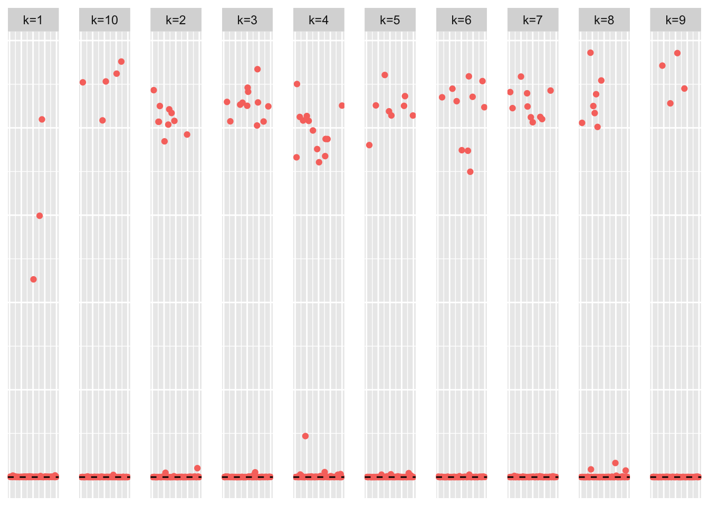
| Version | Author | Date |
|---|---|---|
| b634902 | Annie Xie | 2025-06-05 |
This is a heatmap of the true loadings matrix:
plot_heatmap(sim_data$LL)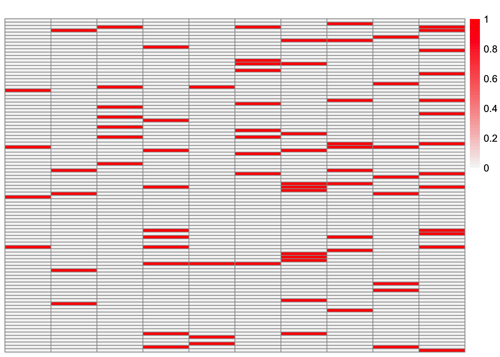
| Version | Author | Date |
|---|---|---|
| b634902 | Annie Xie | 2025-06-05 |
This is a heatmap of \(\hat{L}_{backfit}\). The columns have been permuted to match the true loadings matrix:
symebcovmf_fit_backfit_L_permuted <- permute_L(symebcovmf_fit_backfit$L_pm, sim_data$LL)
plot_heatmap(symebcovmf_fit_backfit_L_permuted, brks = seq(0, max(symebcovmf_fit_backfit_L_permuted), length.out = 50))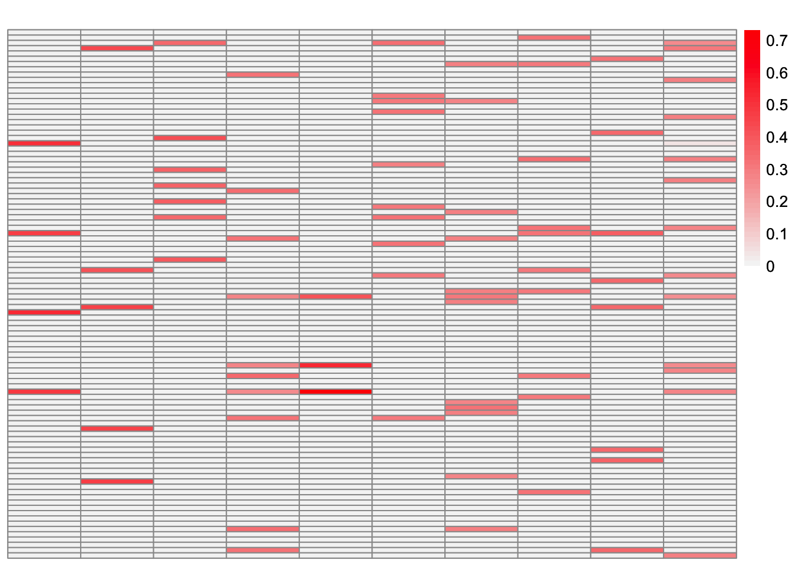
This is the objective function value attained:
symebcovmf_fit_backfit$elbo[1] 3016.829This is the crossproduct similarity of \(\hat{L}_{backfit}\):
compute_crossprod_similarity(symebcovmf_fit_backfit$L_pm, sim_data$LL)[1] 0.8985592Observations
Visually, the estimate after the backfitting appears to better match the true loadings matrix. This is corroborated by the increased cross-product similarity. For many of the factors, the estimates are very close to the true values. However, the estimate for factor 5 is noticeably off. After further inspection, we see that the best estimate for factor 3 captures the shared effects from the true factor 5 along with the shared effects from the true factor 3.
Here, I look at the residual matrix minus the estimate for factor 5 (the two-individual factor):
R <- sim_data$YYt - tcrossprod(symebcovmf_fit_backfit$L_pm[,c(2:10)] %*% diag(sqrt(symebcovmf_fit_backfit$lambda[2:10])))plot_heatmap(R, colors_range = c('blue','gray96','red'), brks = seq(-max(abs(R)), max(abs(R)), length.out = 50))
| Version | Author | Date |
|---|---|---|
| b634902 | Annie Xie | 2025-06-05 |
This is the component generated from the estimate of factor 5:
component_fac5 <- tcrossprod(sqrt(symebcovmf_fit_backfit$lambda[1])*symebcovmf_fit_backfit$L_pm[,1])plot_heatmap(component_fac5, colors_range = c('blue','gray96','red'), brks = seq(-max(abs(component_fac5)), max(abs(component_fac5)), length.out = 50))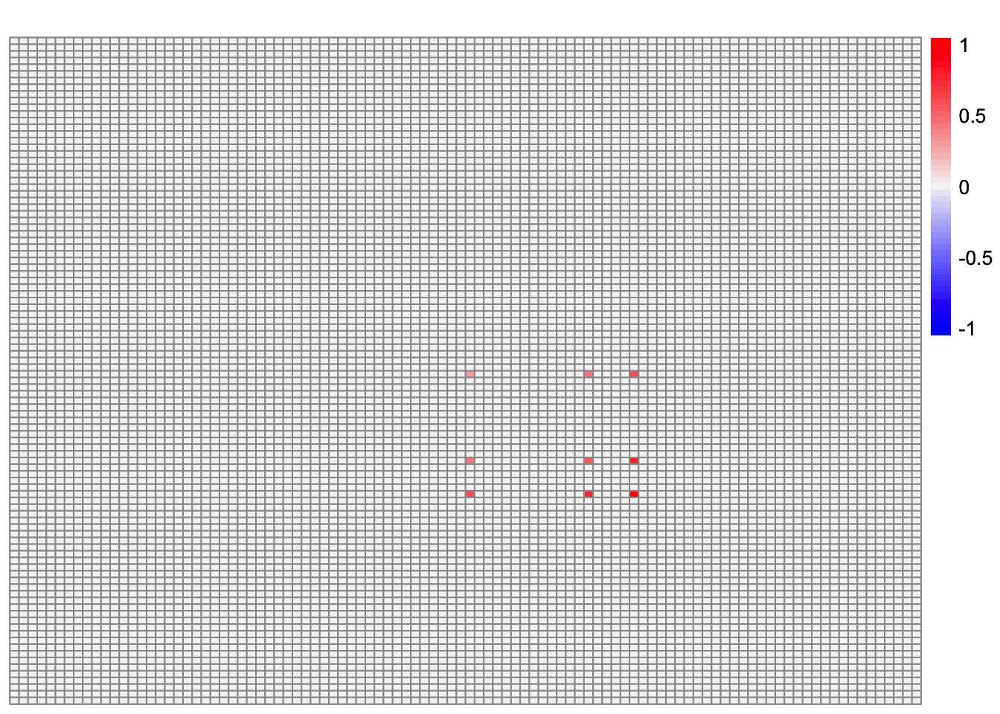
It doesn’t make sense to me why this component would be chosen given the residual matrix.
sessionInfo()R version 4.5.1 (2025-06-13)
Platform: aarch64-apple-darwin20
Running under: macOS Tahoe 26.3
Matrix products: default
BLAS: /Library/Frameworks/R.framework/Versions/4.5-arm64/Resources/lib/libRblas.0.dylib
LAPACK: /Library/Frameworks/R.framework/Versions/4.5-arm64/Resources/lib/libRlapack.dylib; LAPACK version 3.12.1
locale:
[1] en_US.UTF-8/en_US.UTF-8/en_US.UTF-8/C/en_US.UTF-8/en_US.UTF-8
time zone: America/Chicago
tzcode source: internal
attached base packages:
[1] stats graphics grDevices utils datasets methods base
other attached packages:
[1] ebcd_0.0.0.9000 symebcovmf_0.0.0.9000 lpSolve_5.6.23
[4] ggplot2_4.0.1 pheatmap_1.0.13 ebnm_1.1-42
[7] workflowr_1.7.2
loaded via a namespace (and not attached):
[1] sass_0.4.10 generics_0.1.4 ashr_2.2-67 stringi_1.8.7
[5] lattice_0.22-7 digest_0.6.39 magrittr_2.0.4 RColorBrewer_1.1-3
[9] evaluate_1.0.5 grid_4.5.1 fastmap_1.2.0 rprojroot_2.1.1
[13] jsonlite_2.0.0 Matrix_1.7-4 processx_3.8.6 RSpectra_0.16-2
[17] whisker_0.4.1 ps_1.9.1 mixsqp_0.3-54 promises_1.5.0
[21] httr_1.4.7 scales_1.4.0 truncnorm_1.0-9 invgamma_1.2
[25] jquerylib_0.1.4 cli_3.6.5 rlang_1.1.6 deconvolveR_1.2-1
[29] splines_4.5.1 withr_3.0.2 cachem_1.1.0 yaml_2.3.12
[33] otel_0.2.0 tools_4.5.1 SQUAREM_2021.1 dplyr_1.1.4
[37] httpuv_1.6.16 vctrs_0.6.5 R6_2.6.1 lifecycle_1.0.4
[41] git2r_0.36.2 stringr_1.6.0 fs_1.6.6 trust_0.1-8
[45] irlba_2.3.5.1 pkgconfig_2.0.3 callr_3.7.6 gtable_0.3.6
[49] pillar_1.11.1 bslib_0.9.0 later_1.4.4 glue_1.8.0
[53] Rcpp_1.1.0 xfun_0.54 tibble_3.3.0 tidyselect_1.2.1
[57] rstudioapi_0.17.1 knitr_1.50 farver_2.1.2 htmltools_0.5.9
[61] labeling_0.4.3 rmarkdown_2.30 compiler_4.5.1 S7_0.2.1
[65] getPass_0.2-4